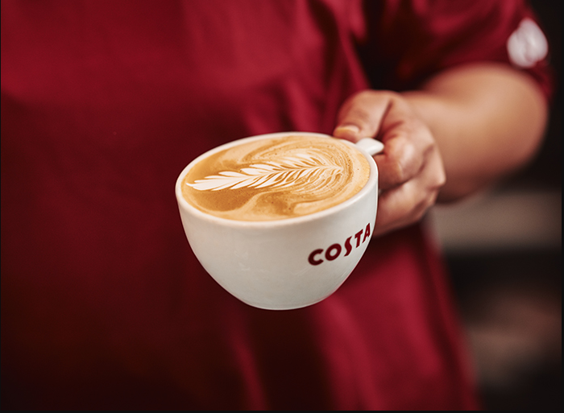
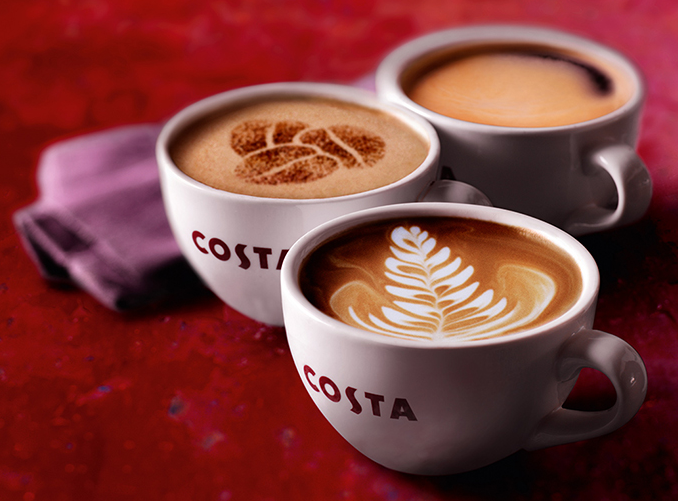

Our Story
The Costa Coffee story began back in 1971 when Sergio and Bruno arrived in London with a burning desire to make great tasting coffee a part of everyday life.
Setting up a small roastery in Fenchurch Street, they committed to crafting the finest quality coffee.
It was here the Costa brothers blind-tested 112 variations of coffee before they tasted one good enough to be our signature blend. They named it ‘Mocha Italia’ and it remains our signature blend to this day.

Signature Blend
Our iconic Signature Blend is the perfect combination and balance of delicate Arabica and strong Robusta beans, precisely slow roasted for a minimum of 18 minutes to ensure the beans keep their hearty flavour, rich aroma, and smooth taste.